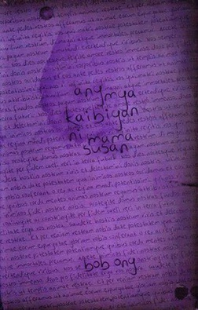
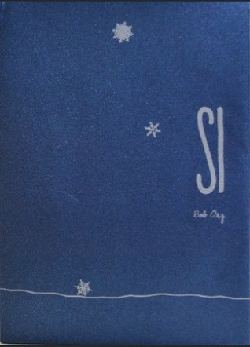
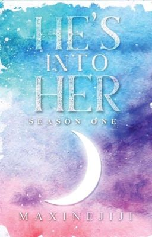
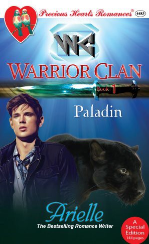
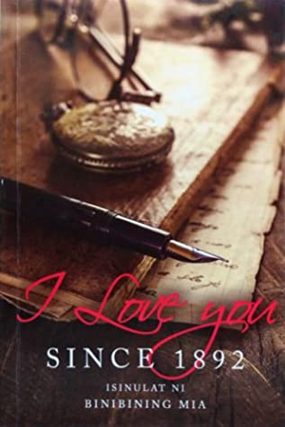
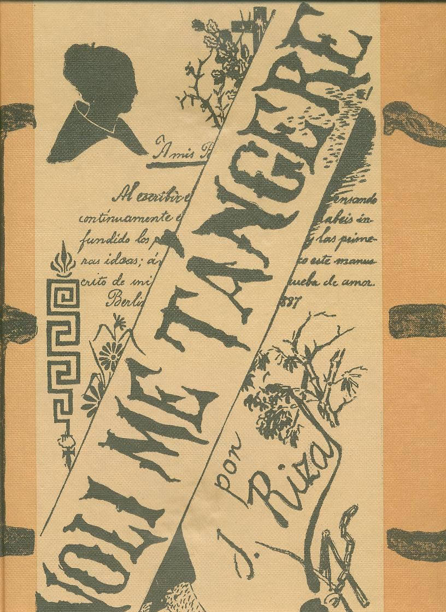
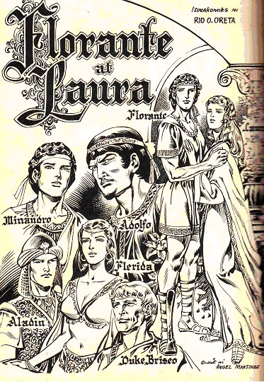
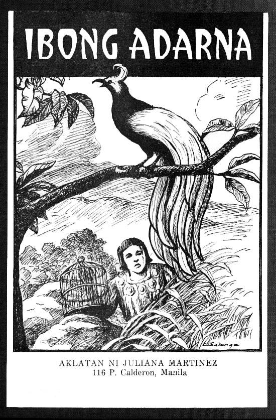
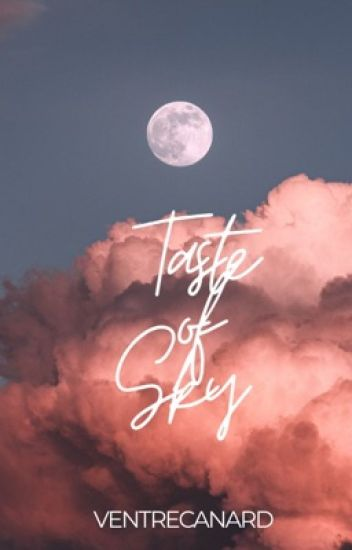

Book Reviews

Ang mga Kaibigan ni Mama Susan
The story follows Gilberto "Galo" P. Manansala, a college student in Manila, as he writes journal entries for a class. Through these entries, he details how ordinary situations spiral into terrifying events, leading him to uncover unsettling mysteries. As he becomes more entangled in these horrors, Galo finds himself unable to escape their grip.
.jpg)
Lumayo Ka Nga Sa Akin
"Lumayo Ka Nga Sa Akin" by Bob Ong is a humorous and reflective novel about love, heartbreak, and self-discovery. It follows a young man navigating the aftermath of a failed relationship, as he confronts his own flaws and attempts to move on.

Si
"Si" by Bob Ong explores love, relationships, and self-discovery through the main character's journey. Known for his humor and social commentary, Ong offers insights into Filipino culture while reflecting on the complexities of personal growth and emotions.

He's into Her
A spunky teenage girl from Mindoro moves to Manila to live with her estranged father and study in a prestigious school.

Paladin Warrior
"Paladin Warrior" by Arielle is a romance novel that blends action, adventure, and fantasy. It follows a noble and heroic paladin as he faces both external battles and emotional struggles, navigating a passionate love story while growing through personal challenges.

I Love You Since 1892
A historical fiction that tells an epic adventure of a modern girl who was brought back in time, to experience an old fashioned life and love in 1892.

Noli Me Tangere
"Noli Me Tangere" by José Rizal follows **Juan Crisóstomo Ibarra**, a young man who returns to the Philippines to find his country oppressed by Spanish rule. The novel exposes social injustices and corruption, inspiring a call for reform and playing a key role in the Philippine Revolution.

Florante at Laura
"Florante at Laura" by Francisco Balagtas is a Filipino epic about Prince Florante's love for Princess Laura, his betrayal by friend Adolfo, and his journey to overcome trials. The story explores themes of love, betrayal, and honor, and is a classic of Philippine literature.

Ibong Adarna
"Ibong Adarna" is a Filipino epic about three princes who search for a magical bird to cure their father’s illness. The story explores themes of loyalty, sacrifice, and redemption.

Taste of Sky
Most women fall for engineers, doctors, lawyers, architects and businessmen but in my case? I fell in love with an astronaut.